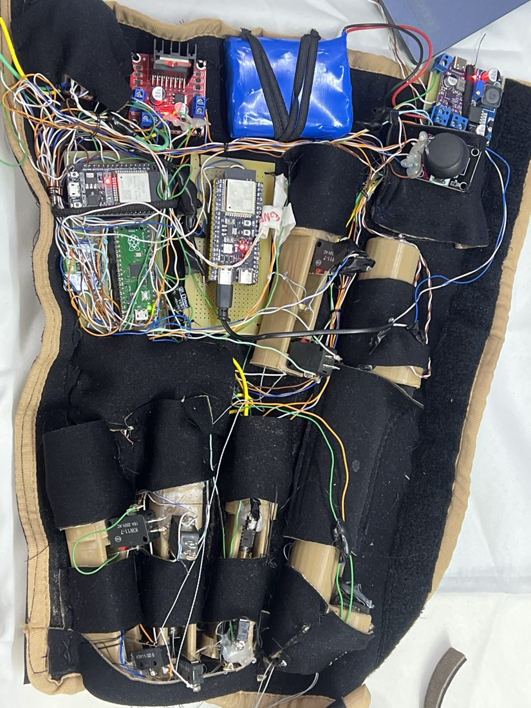

Conecte no Bluetooth do DAMP para ver, ao vivo, o que ele está recebendo e o que deveria estar fazendo.
Os marcadores acendem conforme a peça entra em ação. As posições são aproximadas, marcadas sobre a foto do aparelho.

Direção, posição e as chaves de fim de curso de cada conjunto. Quadradinho vermelho = chave encostada, e o motor para.
| frase | byte | o DAMP deve |
|---|---|---|
| abrir mão | 0x11 | abrir os quatro dedos |
| fecha mão | 0x12 | fechar os quatro dedos |
| para DAMP | 0x13 | parar tudo, na hora |
| puxa punho | 0x14 | fechar o punho |
| solta punho | 0x15 | abrir o punho |
Ruído, ou nada reconhecido, não manda byte nenhum — o coprocessador fica calado de propósito.